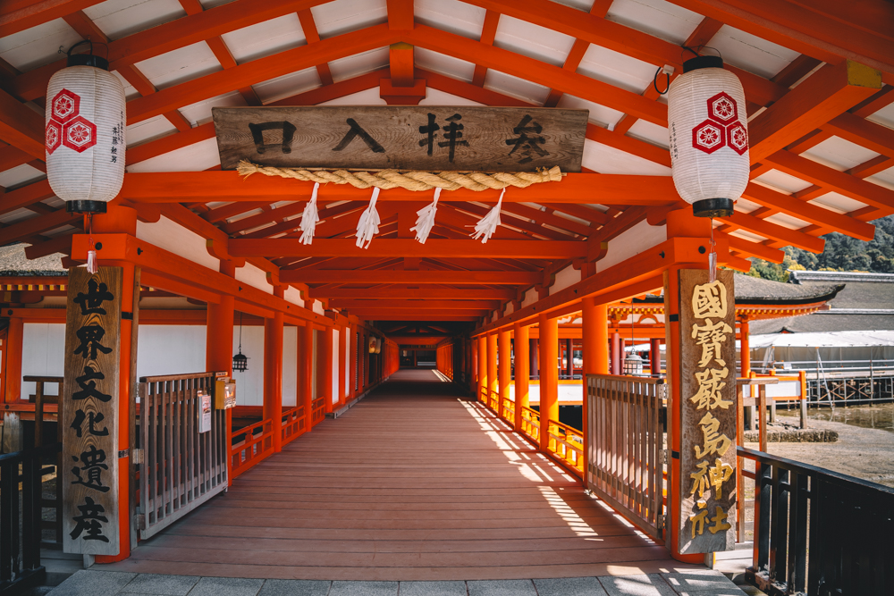
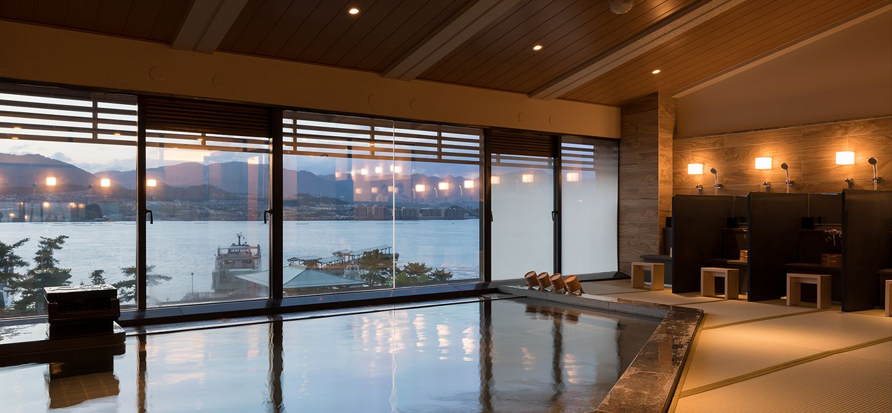
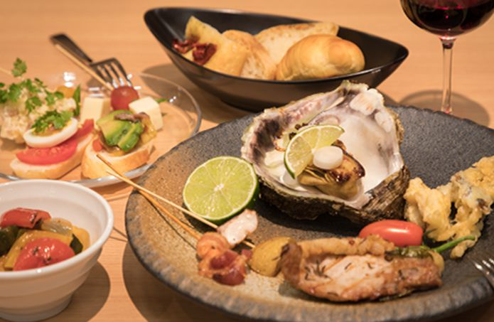

～大人のための宮島の我が家～
ホテル宮島別荘 (広島)
広島といえば、牡蠣や厳島神社を挙げる人が多いだろう。
こちら宮島別荘は、宮島桟橋付近にある最も新しい和モダンホテルだ。
もちろん厳島神社へのアクセスは抜群。
ビュッフェ形式の夕飯・朝食では贅沢にも牡蠣を食することができる。
和モダンを謳うだけあって、部屋は和風。
山が見える部屋、海が見える部屋、露天風呂付の部屋など種類は豊富。
温泉は宮島初の畳敷きで、瀬戸内海を臨むことができる。
「宮島で暮らすとしたら？」をコンセプトに考えられたこの宿で、
暮らすように泊まってみたらいかがだろうか。